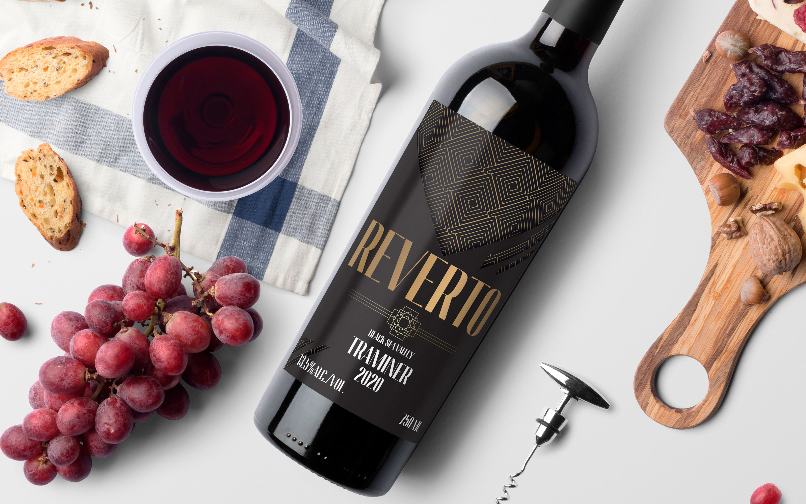
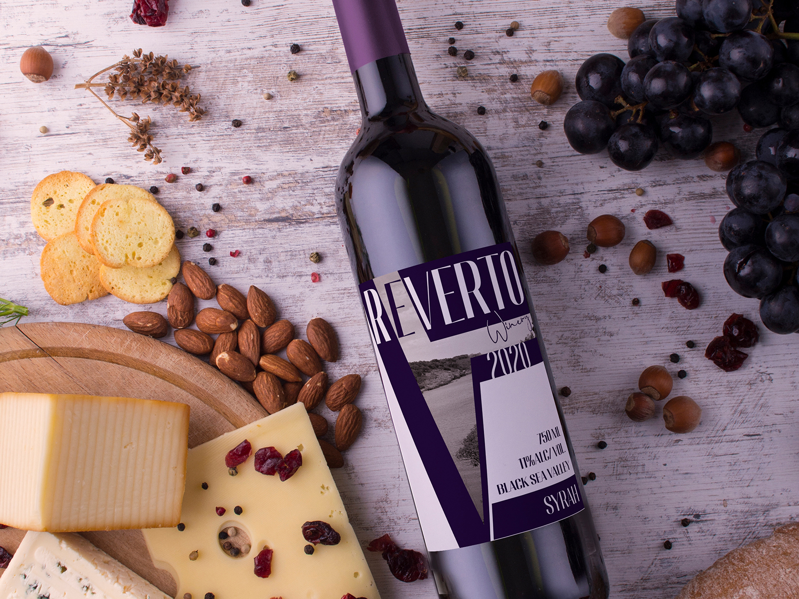
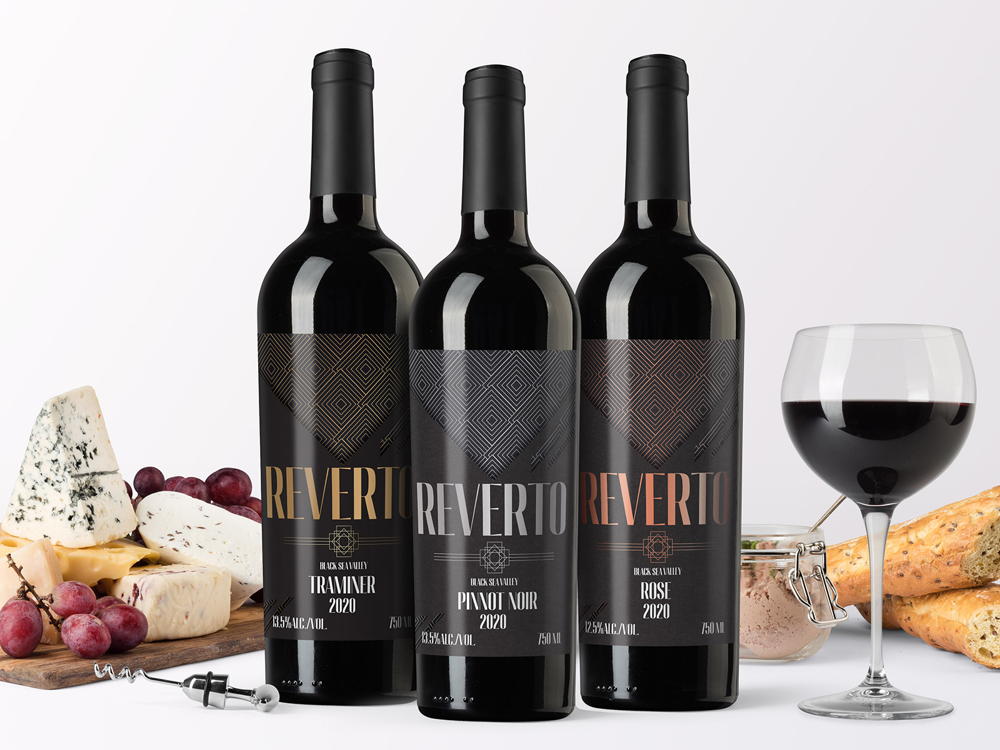
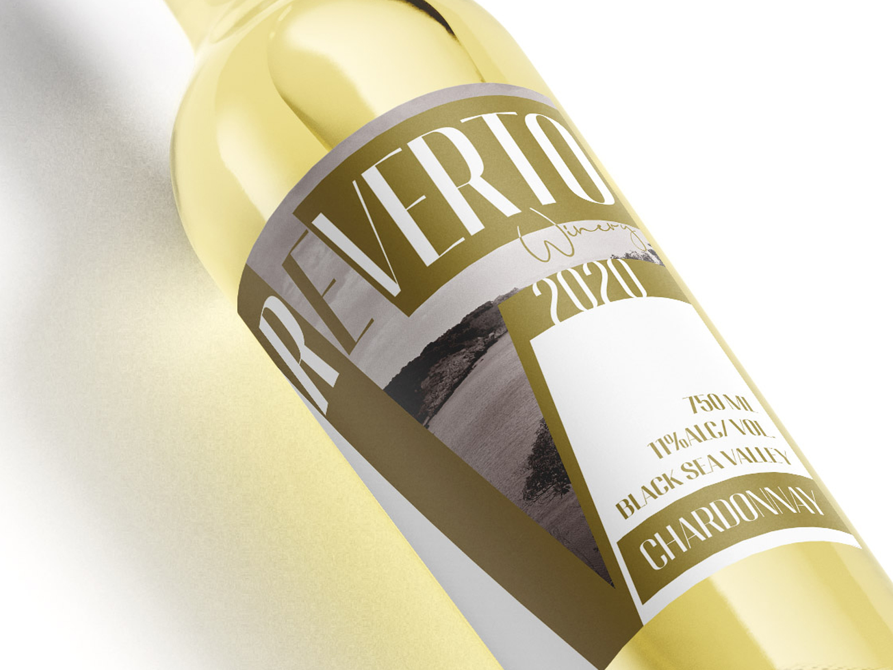
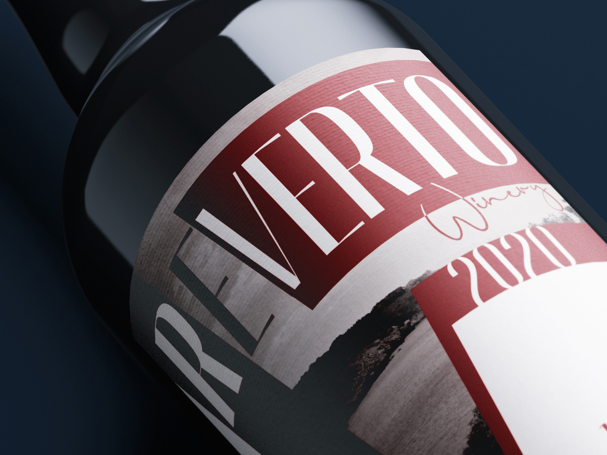
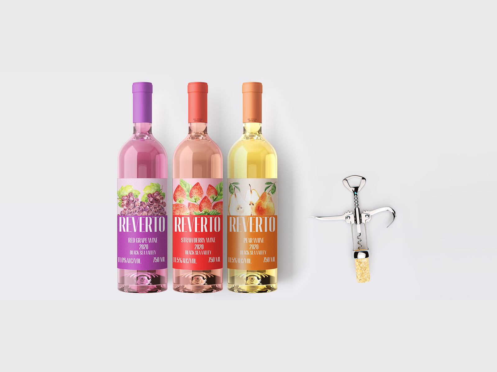
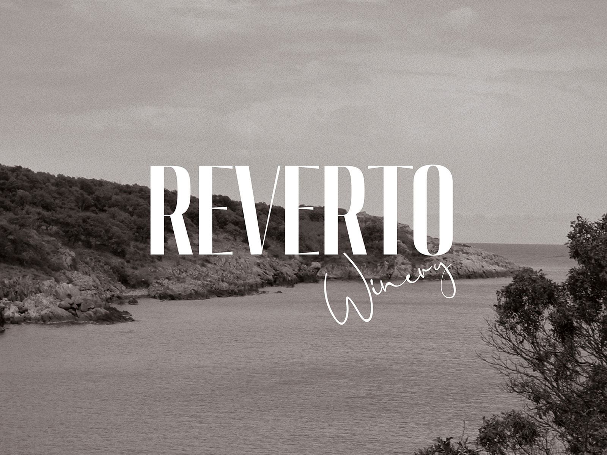

A boutique label system built to hold its own on a shelf full of tradition — without borrowing tradition's usual visual language.
Wine labels usually compete by shouting — foil, crests, cursive scripts promising heritage. Reverto asked for the opposite: one serif mark, a palette pulled from soil and glass, and labels restrained enough to read as typographic studies before they read as decoration.

Reverto Winery — 01+
Reverto Winery — 02+The brief was blunt: hold your own on a shelf built for tradition, without borrowing tradition's usual tricks. So the system leans on proportion and paper stock instead of illustration — a fixed grid carries the varietal information, and the palette shifts just slightly by vintage, the way a wine actually would.
Restraint isn't the absence of a decision — on this shelf, it was the boldest one available.

Reverto Winery — 03+
Reverto Winery — 04+
Reverto Winery — 05+
Reverto Winery — 06+On a shelf where every other label is trying to look old, Reverto's looks considered instead — and that turned out to be the thing that actually stood out.

Reverto Winery — Final+